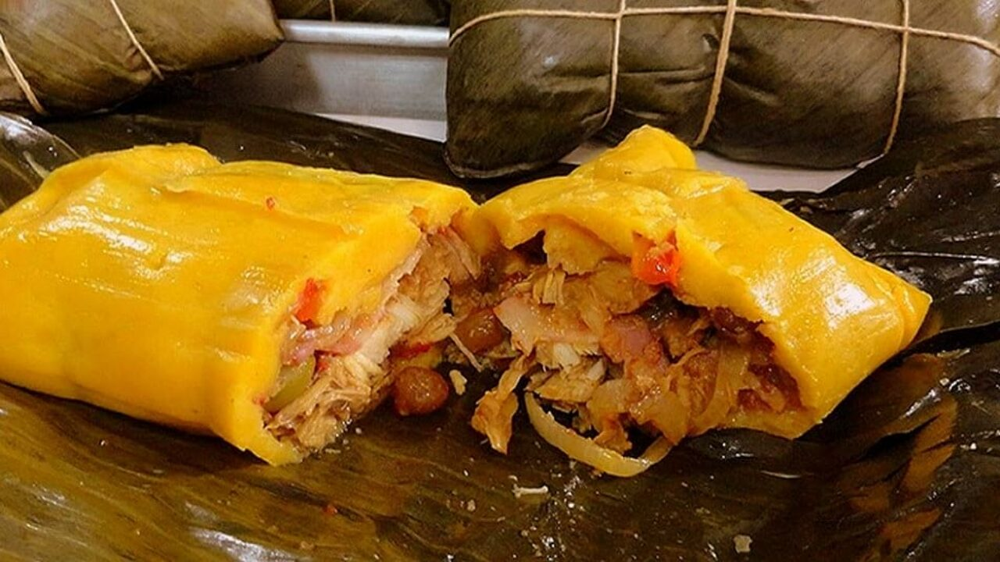

Hallaca Tachirense

"El alma de las festividades tachirenses. Su característica distintiva es el guiso completamente crudo enriquecido con garbanzos, el cual se cocina lentamente al vapor dentro de las hojas de plátano."
⏱️ Tiempo: 240 min🔥 Calorías: 550 kcal📊 Dificultad: Difícil
🛒 Ingredientes
👩🍳 Preparación Paso a Paso
- El Guiso Crudo: Mezclar las carnes picadas crudas con un buen sofrito frío de aliños locales, vinagre y manteca colorada. Dejar macerar desde la noche anterior.
- Preparar el Lienzo: Limpiar muy bien las hojas de plátano. Engrasar ligeramente el centro con manteca con onoto.
- Tendido y Armado: Extender una bola de masa de forma muy delgada sobre la hoja. Colocar una porción generosa de guiso crudo y añadir los garbanzos, aceitunas y alcaparras.
- Amarre y Cocción: Envolver cuidadosamente doblando las hojas y amarrar firmemente con el pabilo. Hervir en una olla grande con agua salada por 3 a 4 horas.